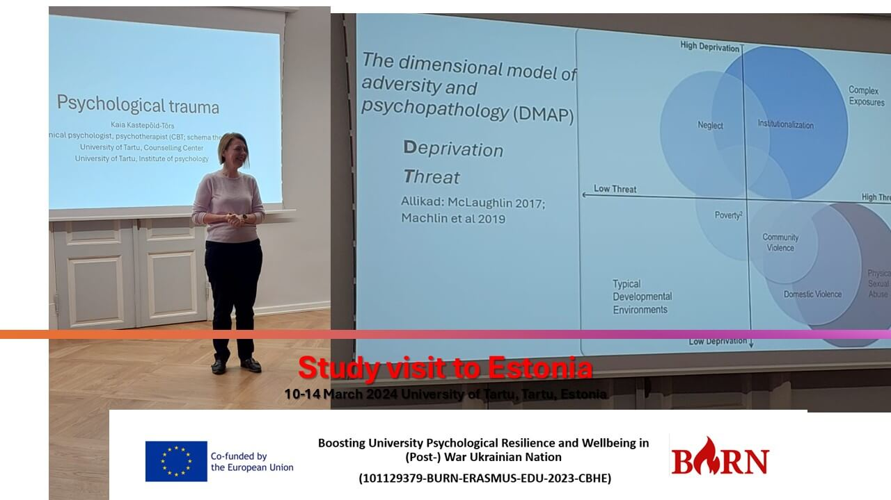

Trauma trainings during study visit (Tartu, March 11, 2025)
On March 11, 2025, a delegation of psychologists from five Ukrainian universities and three EU universities (TU, IPU, UL) embarked on a study visit to Estonia as part of the BURN (Boosting University Psychological Resilience and Wellbeing in (Post-)War Ukraine) project. Hosted by the University of Tartu, this visit aims to enhance psychological support services in Ukrainian higher education institutions by deepening expertise in trauma therapy.
Day 2 focused on the nuances of traumatology with Kaia Kastepold-Tors, offering insights from the perspective of clinical psychology. A dynamic Q&A session addressed key challenges such as sleep disorders, social isolation during displacement, retraumatization in professional practice, dissociative reactions in families with children with special needs, comorbid epireactions under cumulative stress, and post-traumatic growth.

The discussion also highlighted Trauma-Informed Care, emphasizing the core values of safety, trustworthiness and transparency, peer support, and sensitivity in psychological practice.